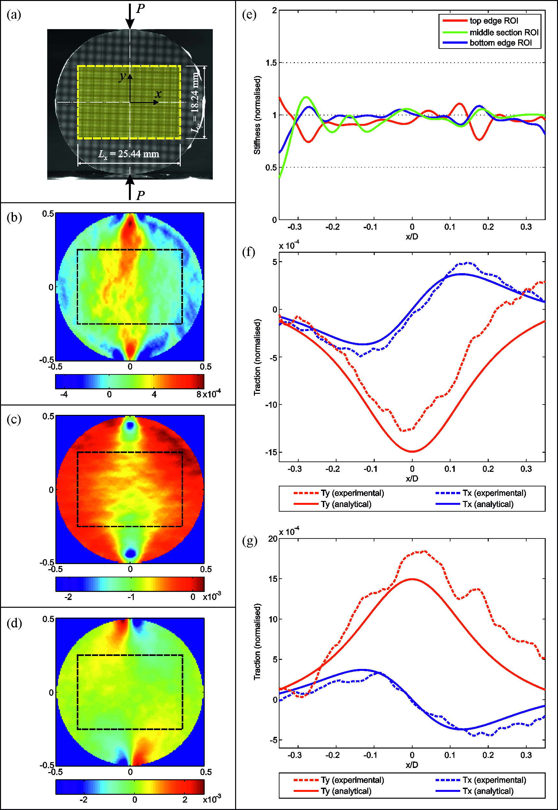
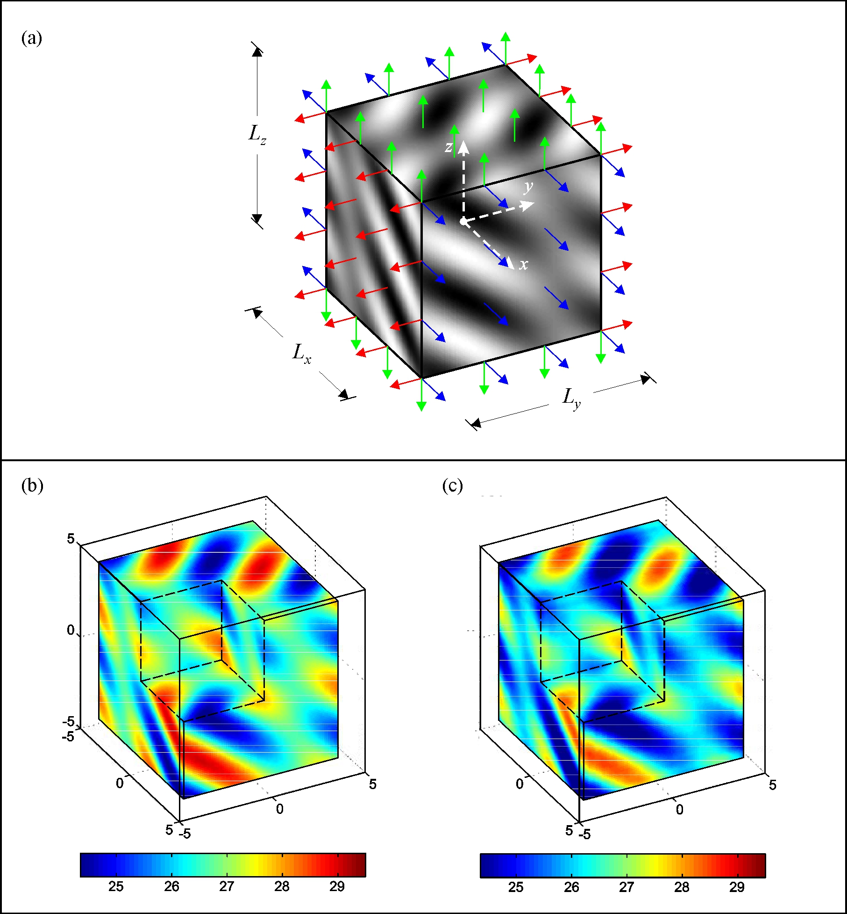
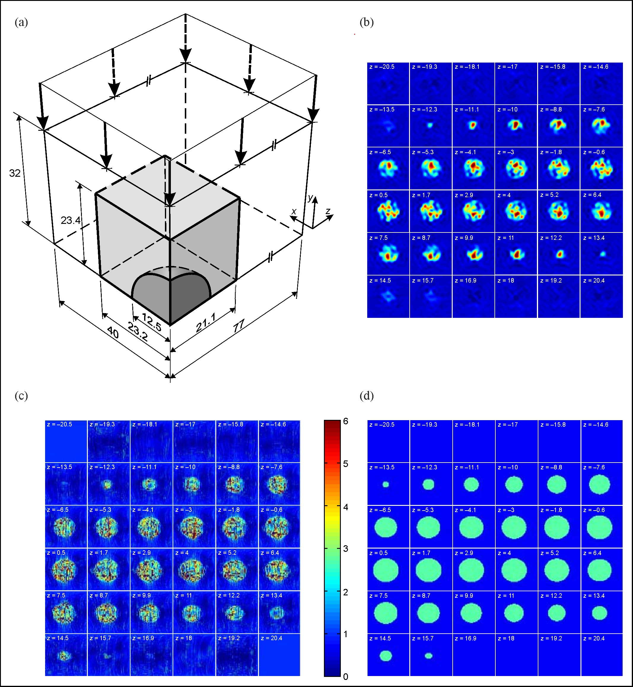

Tho T Nguyen >> Doctor of Philosophy (PhD) project
The Fourier Virtual Fields Method for the identification of material property distributions
This three-year research project was conducted at the Optical Engineering Research Group at Wolfson School of Mechanical, Manufacturing and Electrical Engineering, Loughborough University (UK). The project is part of the EPSRC-funded project 3-D strain field mapping of scattering media using Wavelength Scanning Interferometry with applications to detect defects inside materials, which was 'visualised' in macro scale by regions of modulus reduction. This is done by reconstructing the spatially-varying modulus map of the whole domain using full-field optical strain data. The reconstruction of modulus distributions is implemented through the newly developed Fourier-series-based Virtual Fields Method (F-VFM), taking advantage of deformation fields measured by an in-house high-resolution optical system. Applications to highly scattered materials e.g. composites, and to incompressible materials e.g. soft biological materials. |
|
Supervisors: Prof. Jonathan M. Huntley; Prof. Ian A. Ashcroft and Dr. Pablo D. Ruiz.
 Summary
Summary
Inverse problems may arise in solid mechanics when the knowledge of either the material properties or of the boundary conditions is restricted. Material parameters are often determined by implementing several standardised tests with the assumption that the stress or strain distributions within the testing region are uniform. However, if the materials under test exhibit spatial variations in these parameters, this approach is no longer viable.
The first method to solve such inverse problems is the efforts to find analytical solutions to the fundamental equations in solid mechanics, through a massive number of sophisticated mathematical transformations. The method is limited by the requirement of a priori knowledge of the material properties.
Finite element model updating (FEMU) is another method to solve inverse problems by adjusting iteratively an approximate finite element model until the responses it produces are as close to those acquired from experiments as possible, in a least-squares sense. The confidence of the results obtained from a FEMU scheme may depend on several subjective factors such as which optimisation algorithm being used, initial estimate of the unknown vector, constraints of variables, maximum iterations allowed, etc.
An alternative approach to tackling inverse problems of this type is by using the Virtual Fields Method (VFM). The development of the VFM was inspired by a relevant interpretation of the equation of the virtual work principle. The advantage of the VFM compared to other methods is its ability to solve inverse problems without any iteration. The key feature in any application of the VFM is the selection of the virtual fields. We retain the basic concepts underlying of the VFM but approach the parameterisation of unknown quantities in the spatial frequency, rather than spatial, domain by performing a 2-D Fourier series expansion of the unknown quantities over the region of interest. Successful applications of this Fourier-based VFM (denoted throughout by F-VFM) in the identification of a range of different stiffness distributions scenarios (in both 2-D and 3-D) have demonstrated its capabilities, for the case where the boundary conditions are either specified or unspecified.
The outcomes of the work have shown that:
- Novel choice of the virtual fields as simple cosine/ sine functions in the F-VFM enables a computationally efficient algorithm by taking advantage of the fast Fourier transforms of the input data, which indeed is able to solve a thousand-degree-of-freedom problem within several seconds, or about 6 orders of magnitude of computational time less than that of an iterative model updating technique.
- If information of the boundary conditions over the perimeter (2-D) or bounding surfaces (3-D) of the domain of interest is provided, reconstruction of modulus is achieved at its real scale. However, in reality of experimental mechanics, such information is not accurately measured or even impossible to measure (e.g. in soft materials). In this case, the modulus will be reconstructed up to a scale factor by using one of the three approaches, namely the 'experimental traction', the 'windowed traction' and the 'Fourier-series traction' approaches.
- Even when the displacement noise is higher than in typical experimental fields, the accuracy of the modulus identification is still within an acceptable range of up to ~±1%.
- The F-VFM has successfully been applied to 2-D and 3-D problems, using numerical (discontinuous-modulus pattern, 'egg-box' pattern, Gaussian pattern, plate with rectangular inclusion, circular disc in Hertz contact conditions, etc) and experimental data (discontinuous-modulus pattern, cube with spherical inclusion, circular disc in Hertz contact conditions, etc), with and without knowledge of the boundary conditions.
 Figures
Figures

Example of the F-VFM applied to 2-D simulation data from a thin plate of compliant material (dark grey) containing an elastic square inclusion 4x stiffer (light grey) subject to uniform biaxial stress (a).
Reconstruction of stiffness distribution at different noise levels in the displacement fields: 5x10-3mm (left column) and 10-2mm (right column). The Fourier series-based extension to the virtual fields method (F-VFM) was implemented with N=40, and with a
displacement-gradient kernel size of 7x7 pixels throughout. (b) and (d) Recovered stiffness distribution by
F-VFM after data smoothing and filtering; (c) and (e) horizontal cross-sections through the centre of the inclusion
and compared with the reference.

Example of the F-VFM applied to 2-D data from an aluminium circular disc (a) of diameter
36mm under compressive load with a highlighted ROI of size Lx×Ly=25.44×18.24mm2
within which the strainfields are extracted.
(b)(c)(d) are respectively strain components in xx, yy and xy-directions.
(e) Stiffness profiles at particular cross-sections
reconstructed by the F-VFM. (f)(g) Recovered non-dimensional
traction profiles Tx (in blue) and Ty (in red) on (f) the top edge
and (g) the bottom edge of the ROI compared to their counterparts
from Hertz contact theory.

Example of the F-VFM applied to 3-D simulation data from a cuboid of an egg-box modulus distribution (a) subject to uniform tensile loads over all of its faces. (b)(c) Reconstruction of the 3-D egg-box modulus distribution using highest normalised spatial
frequencies M = N = O = 15 and known boundary conditions, (b) in the noise-free case; and (c) Gaussian noise of standard deviation σ = 5×10-3mm was introduced to the input displacement fields. In all figures, the thin shell of low magnitude
data due to the filtering technique was removed, and an eighth of the cube is cut out to allow information inside the cube to be visualised.

Example of the F-VFM applied to 3-D phase-contrast MRI data of a biological-mimicking phantom with a spherical inclusion 4x stiffer than the surrounding material, subject to distributed compressive loads, with the volume of interest highlighted. (a) Schematic of 1/8 of the tested phantom. (b)(c)(d) Reconstruction of shear modulus distributions of the two-phase phantom using different techniques, respectively (b) the F-VFM, (c) the finite-element-based VFM, (d) the magnitude of the MRI signal.
 Recognised outcomes of this PhD research
Recognised outcomes of this PhD research
3 peer-reviewed journal papers and 3+ conference paper have been published (see Publications).
 Download my Thesis [link]
Download my Thesis [link]
The thesis is available to public download from the Loughborough Univeristy Institutional Repository under the Creative Commons Licence conditions.
Last updated: 10/06/2016